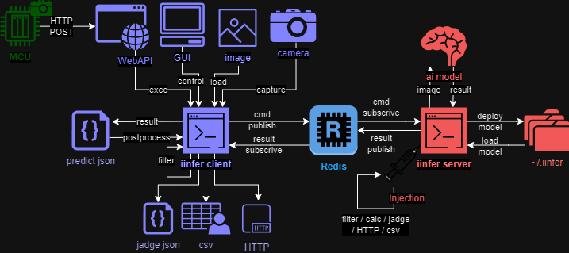

iinferの概要
iinferを使用することで、AIモデルを簡単に実行することが出来ます。
onnx又はmmlabフォーマットのAIモデルファイルを実行するアプリケーションです。
iinderの動作イメージ
iinfer client は imageファイル や camera から画像を取得し、 推論結果 predict.json を出力します。
iinfer server は推論を行うサーバーです。 iinfer client からの要求に応えて、推論結果を iinfer client に返します。
iinfer server は予め ai model をロードしておくことで、推論を高速化します。
iinfer client と iinfer server は Redis 経由で通信します。
iinfer server と Redis は dockerコンテナ を使用して起動させることが出来ます。
インストール方法
次の手順でインストールしてください:
pipを使用してインストールします:
pip install iinfer
コマンドラインオプションを補完するときは次のコマンドを実行します。（Ubuntuの場合のみ）:
eval "$(register-python-argcomplete iinfer)"
サーバーコンテナをインストールする場合は次のコマンドを実行します。（Ubuntuの場合のみ）:
iinfer -m install -c server docker-compose -f up -d
iinferの使用方法
iinferを使用するには、次のコマンドを実行します:
サーバーの起動（Windowsの場合）:
REM Redisサーバーコンテナの起動 iinfer -m redis -c docker_run -f \ --wsl_name <WSLのディストリビューションの名前> \ --wsl_user <WSLのLinux内のDockerが使えるユーザー> REM 推論処理を実行するサーバープロセスの起動 iinfer -m server -c start -f
サーバーの起動（Ubuntuの場合）:
# Redisサーバーコンテナと推論処理を実行するサーバープロセスの起動 docker-compose up -d
AIモデルのデプロイ:
# 画像AIモデルのデプロイ # 推論タイプはモデルのAIタスクやアルゴリズムに合わせて指定する。指定可能なキーワードは"iinfer -m client -c predict_type_list"コマンド参照。 iinfer -m client -c deploy -n <任意のモデル名> -f \ --model_img_width <モデルのINPUTサイズ(横幅)> \ --model_img_height <モデルのINPUTサイズ(縦幅)> \ --model_file <モデルファイル> \ --model_conf_file <モデル設定ファイル> \ --predict_type <推論タイプ> \ --label_file <ラベルファイル> # デプロイされている画像AIモデルの一覧 iinfer -m client -c deploy_list -f
AIモデルのセッションを開始:
# 画像AIモデルを起動させて推論可能な状態に(セッションを確保)する # use_trackを指定するとObjectDetectionタスクの結果に対して、MOT（Multi Object Tracking）を実行しトラッキングIDを出力する。 iinfer -m client -c start -n <モデル名> -f \ --use_track
推論を実行:
# 推論を実行する # output_previewを指定するとimshowで推論結果画像を表示する（GUI必要） iinfer -m client -c predict -n <モデル名> -f \ -i <推論させる画像ファイル> \ -o <推論結果の画像ファイル> \ --output_preview # カメラキャプチャー画像を元に推論を実行し、クラススコアが0.8以上の物体のみを検出する # --stdin --image_type capture で標準入力のキャプチャー画像を推論する iinfer -m client -c capture | \ iinfer -m client -c predict -n <モデル名> \ --stdin \ --image_type capture \ --nodraw | \ iinfer -m postprocess -c det_filter -f -P \ --stdin \ --score_th 0.8
AIモデルのセッションを開放:
# 画像AIモデルを停止させてセッションを開放 iinfer -m client -c stop -n <モデル名> -f
サーバーの停止（Ubuntuの場合）:
# Redisサーバーコンテナと推論処理を実行するサーバープロセスの停止 docker-compose down
サーバーの停止（Windowsの場合）:
REM 推論処理を実行するサーバープロセスの停止 iinfer -m server -c stop -f REM Redisサーバーコンテナの停止 iinfer -m redis -c docker_stop -f \ --wsl_name <WSLのディストリビューションの名前> \ --wsl_user <WSLのLinux内のDockerが使えるユーザー>
データの保存場所
pathlib.Path(HOME_DIR) / '.iinfer'